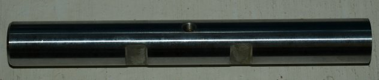

Electric Starter Installation Check List
Second phase, preparing parts to send to Old Britts for modification
and determining if any required parts need to be ordered.
Last updated 11/01/11
This check list pertains to the items that you may be shipping to Old Britts for modification.
Also are a list of stock parts that will be required for a successful installation.
You should have these parts, but if you do not or yours need replacing, order them now.

We estimate this step will take approximately 1 hour.
Line No.
Description
Check 1
Remove the three inspection covers from the outer primary case.
. 2
Please clean the outer primary cover prior to shipping.
We hate to clean off years of grime from parts and will charge a premium for this service.
. 3
Please clean the inner primary case prior to shipping.
. 4
If you want the swingarm lubrication upgrade done
(see Modify Customers Swingarm for MK3 Lubrication),
leave the bushings in the swingarm, but please clean the swingarm prior to shipping.
. 5
If you want the battery box modification done
(see Modify Customers Battery Box for Starter Upgrade),
remove the oil tank spacer and grommet and please clean prior to shipping.
. 6
The clutch location circlip (06-0752) is required.
This circlip is on the gearbox mainshaft and if not removed from the mainshaft, it would not need to be replaced.
. 7
The stock clutch location spacer (06-0747) is required.
Old Britts will be using a stock spacer to make sure of proper alignment of the belt drive clutch basket to the inner primary case.
If you do not have this spacer or you believe it is not stock, you will need to order one.
. 8
The clutch center (06-3979) needs to be in good shape.
If your clutch center has wave slots, it should be replaced. If ordered from Old Britts, we will install it into the new
belt drive clutch basket. If Old Britts does install a new clutch center, a new tab washer (06-3459) will automatically be included
that does not interfere with the new clutch basket; see the fifth phase documentation on why this is important.
. 9
The clutch tab washer (06-3459); used on 850s and should be used for all Commandos.
If your tab washer is not re-usable or you do not have one, you need to order one.
. 10
The clutch fixing nut washer (06-3447) is used in conjunction with the tab washer and if you do not have one,
you need to order one.
. 11
The clutch fixing nut (04-0373) does not need to be replaced unless it is not re-usable.
. 12
Swingarm Pivot Spindle, Pre-MK2A (06-0453) to go with the MK3 engine cradle.
If the MK3 Swingarm Lubrication Upgrade Kit is ordered or your swingarm has the side flats for the MK3 Cotter Locating Pins,
you do not need to order this spindle.
.
This page was written and designed by F. H. Eaton
& Associates if you have any questions or comments please
contact us at infon@fheaton.com